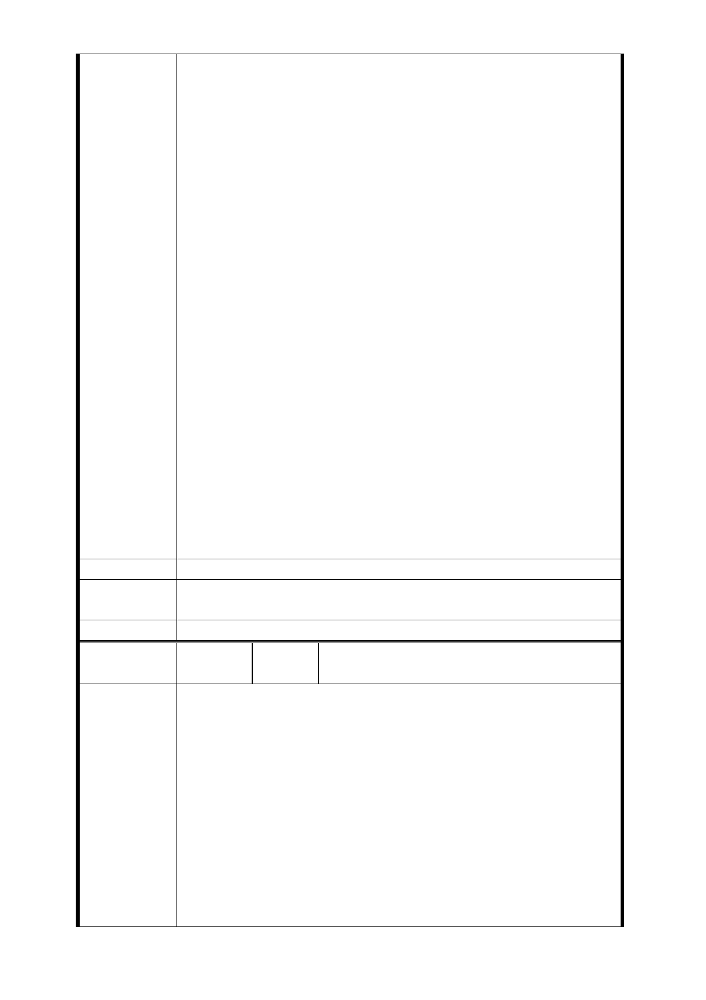

諒關心的大家庭，這島嶼空間狹小，我們懂得珍惜，我們性
情溫和，我們彼此尊重，我們是全世界民主民權的典範，我
們在這塊土地，世世代代在此，我們作農一輩子，作工一世
，我們在中央果菜市場賣菜擺攤，拉拔小孩長大，作農作工
雖然辛苦，但是我們心中歡喜踏實。
我們在萬大路，養育我們小孩，這群人民日出而做，日落而
息，這群人民的力量，物、財力相當微薄，我們沒有政治背
景，政治的親朋好友，我們沒有。最近幾年金夭壽，捷運有
一堆開發案，要來搶農地、搶住、商地，炒農地炒共權，私
下變換位置，私下被政治人物協商，私下被利益財團矇騙，「
土地正義」去哪裡，百姓的生命生計去哪裡了，百姓與政府
不能謀求合理的管道嗎？我們不要提高建蔽率，我們不要提
高容積率，我們只要原先在哪設站，就回到哪設站，說出背
後的真理！擊退背後的黑手！
LG04 站，這裡的土地機能在環評，是最活絡的區域，我們不
是最老舊、最破舊的住戶，我們不知道為何公有土地不用？
萬大國小空地不用？天主教玫塊園空地不用？我們不知道為
何設站位置會變更這麼多次？我們迫於孤立且有恨，無依靠
的狀態如何改變，雖然政府官員苦心經營解釋，在未來審議
，決定性關鍵的力量，我們仰賴的真理、天理，可幫助我們
自救的各位委員，我們一封信，告訴各位在組織法令，在決
定性關鍵權的計畫委員，專才學者們；這群在辦公室作業的
人，我們無辜無奈，自救住戶是整體，我們爭取的是土地還
我權。
台北捷運萬大線 LG04 站自救會敬書
建議辦法
市府回應
意見
同編號捷八－1 回應意見。
委員會決議 同編號交一－1 委員會決議。
編
號
捷八-10
陳情人
捷運萬大線 LG04 居民自救會
會長：洪○壽、副會長：陳吳○珠
主旨：捷運萬大線 LG04 站擅自變更『出入口』位置，實屬
草率規劃、違背常理及比例原則，不但勞民傷財、製造民怨
、徒增全體住戶的憤怒，呈請原有規劃位置，以正視聽。
說明：
一、按捷運萬大線 LG04 站原於民國九十四年對特定居民召開
陳情理由
公聽會之時，其出入口及相關周遭設施土地使用係規劃在『
萬大國小』附近，依該規劃內容來看，無論對於土地成本亦
或是損及人民權益，皆已降到最低的程度，因此多年以來周
邊居民沒有人反對或提出異議，所以全部居民長期的潛意識
權，都已確認原規劃地點早已定案，倘如有變更新地點規劃
，其基本要件當然就是要比原先規劃地點更有優越性且傷害
更低，始符合人情事理！反之，如反係採用侵害人民權益更
- 143 -